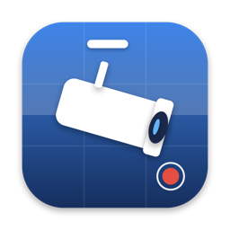
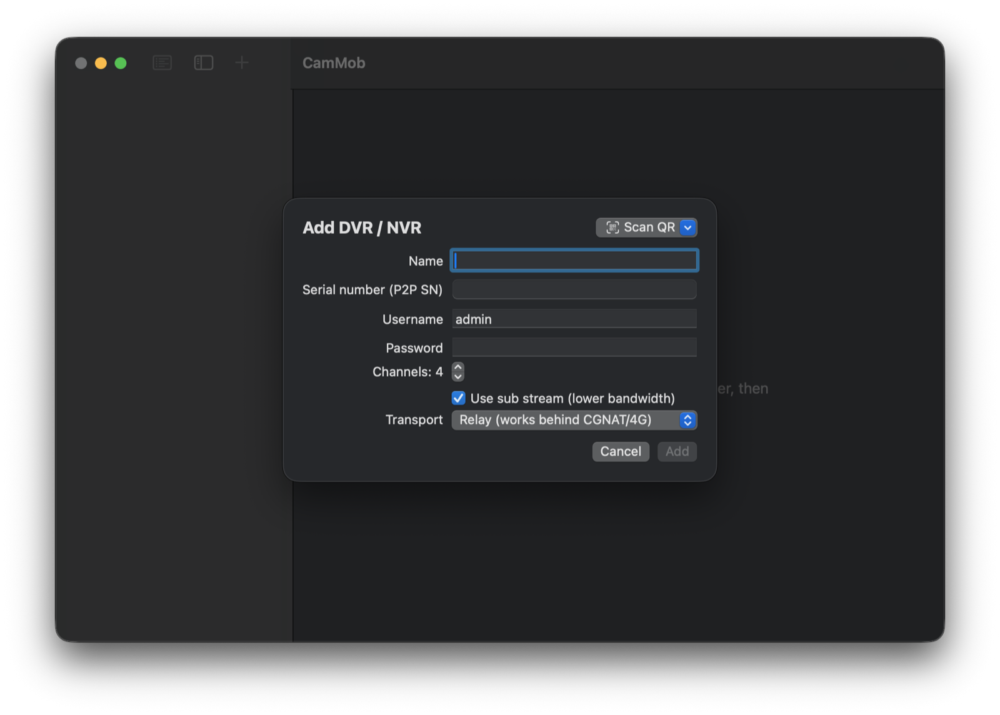

CamMob
Your CP Plus DVR, live on the Mac. The same P2P path as gCMOB / iCMOB, no port forwarding.

Install with Homebrew
brew tap rajpdus/tap
brew install --cask cammobWhat it does
- Adds a recorder by its P2P serial number: scan the QR on the DVR with the Mac's camera, drop a photo, or import a gCMOB device card.
- Connects through CP Plus's InstaOn cloud (or Dahua's Easy4ip) with a reliable PTCP tunnel, through the relay or a direct hole punch.
- Shows every channel live in a grid, decoded in hardware (H.264 and H.265), with a protocol log for troubleshooting.
- Keeps device passwords in the login Keychain. No accounts, no telemetry.
Requirements
macOS 14 Sonoma or later on Apple Silicon. The app is ad-hoc signed: on first launch, right-click → Open.